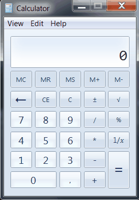

We have now the means of running command sequences on the model and on the real calculators, and can write the actual tests. We define them in a typical test class.
namespace Examples.UITests
{
using System;
using System.Collections.Generic;
using System.Linq;
using ExtensionCord;
using LinqCheck;
public class CalculatorTests
{
To determine which version of the calculator to instantiate, we need to
check the OS version. Apparently there is no convenient and general way
to tell which version of Windows we are running. Fortunately we need to
only distinguish between Windows 7 and newer OS versions. This can be
accomplished by looking at the OSVersion property in the Environment
class. For Windows 7 the major/minor version number is 6.1 and for
newer Windows versions it is 6.2.
private ICalculator GetWinCalculator ()
{
if (Environment.OSVersion.Version.Major == 6 &&
Environment.OSVersion.Version.Minor == 2)
return new Win10Calculator ();
else
return new Win7Calculator ();
}
Finally we get to the core of the matter: to write the test method that generates random command sequences and run them both on the model and the real calculator. Let's walk through the method.
[Test]
public void TestRandomSequence ()
{
Calling the dummy Register method makes sure that the generator
for arbitrary commands is registered.
Command.Register ();
We create the Windows calculator and the model calculator in a using block so that they are disposed automatically after test are run.
using (var wincalc = GetWinCalculator ())
using (var modcalc = new ModelCalculator ())
{
The Linq property creates a random command sequence. Note
that we use the standard implementation for
IArbitrary<List<T>> here. When we have registered an
implementation for IArbitrary<T>, it is generalized for
collections such as lists automatically.
(from commands in Prop.ForAll<List<Command>> ()
The generated sequence is executed with the two instances of ICalculator interface.
let realres = Command.Execute (wincalc, commands)
let modres = Command.Execute (modcalc, commands)
We return the sequence and the results to be checked.
select new
{
ok = wincalc.ResultAvailable && modcalc.ResultAvailable,
commands = commands.AsPrintable (),
realres,
modres
})
The only thing we check is that if both calculators have their result available, then they should be equal (ignoring the possible rounding errors).
.Check (t => !t.ok || t.realres.ApproxEquals (t.modres));
}
}
When we execute the test, we should see the calculator launched and its buttons being pressed in a rapid fashion.

There are a couple of cases that cause the test to fail in Windows 7. The first is that automation sometimes fails when querying for the invoke pattern. You might get the following exception:
System.InvalidOperationException: Unsupported Pattern.
I could not find a reason why and when this is happening, so I could not fix the issue. In Windows 10 this problem does not occur.
The other case when the test fails is much more interesting. There is a difference in how Windows 7 and Windows 10 calculators work. The model corresponds to the operation of Windows 10 calculator, so in that OS the problem does not exist. In Windows 7, for example the following command sequence yields different results:
Executing tests for fixture: CalculatorTests
Falsifiable after 17 tests. Shrinking input..
Test 'TestRandomSequence' failed.
Reason: Property '(Not(t.ok) OrElse t.realres.ApproxEquals(t.modres))' failed for input:
{ ok = True, commands = [ *, =, 3, =, -, / ], realres = 0, modres = 3 }
The difference is how long the calculator remembers the last operation
it performed. In the model and in Windows 10, the last operation is
reset after the user presses =. In Windows 7, though, the calculator
remembers the operation, even after equal button has been pressed. Is
that a bug or a feature? That is up to a debate.
You can also see from the example that LinqCheck throws pretty wild command sequences to the calculators. That is the whole point of testing with random inputs. No sensible person would ever come up with such test cases that get generated randomly. Therefore, we will actually find new types of bugs with this method, and cover a lot of corner cases that we would otherwise leave unattended.
}
}
It is possible and relatively easy to test mutable programs with LinqCheck. It requires a bit more code, but that code is mostly boilerplate. The hardest part of the process is building the model for your imperative program. By utilizing automation in your tests, you can create interesting test suites to existing programs without even having their source code.